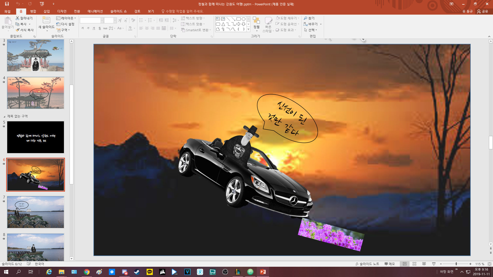
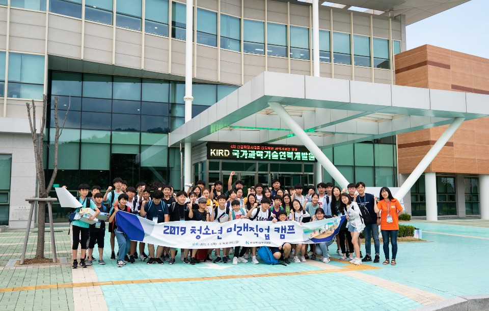
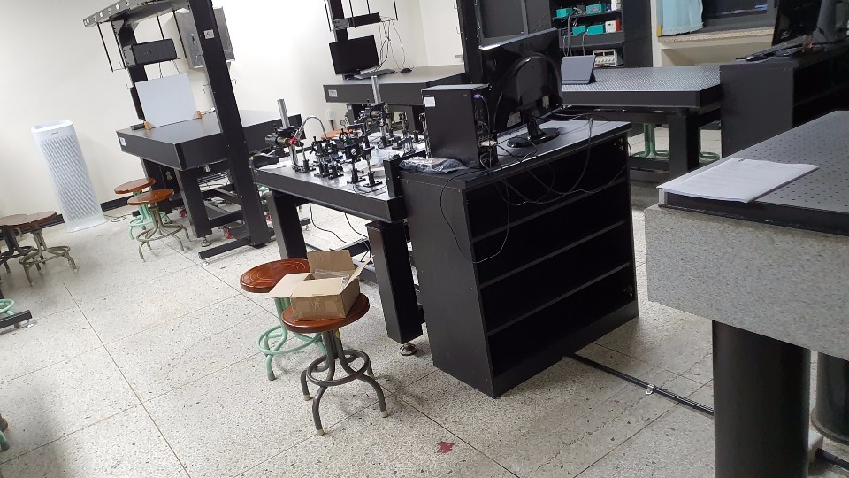
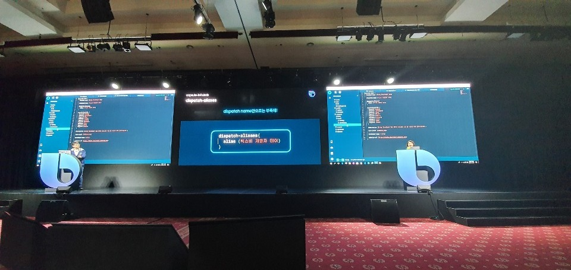

나의 진로 탐색
이번엔 제가 진로를 어떻게 찾고있는지,
진로에 영향을 받은건 뭐가 있는지 알아볼까요.
저는 위에 두권의 책에게 영향을 받고 진로를 찾아 떠났습니다.
일단 기숙사와 야자를 끊고 대략 6시간을 의미있게 사용하고 있습니다.
대표적으로 지금 하고있는 코딩과 편집등을 개인적으로 하고있고요.

(↑인간극장 인터뷰 형식으로 만든 관동별곡 발표ppt 사진이다)
책은 언제나 읽고 있고 학교에서 내는 과제도 최대한 고퀄리티와 새로움을 추구하고 있습니다.
워낙 나서는걸 좋아하다 보니 진로캠프 등을 참여할 기회도 많았습니다.

위 사진은 선착순으로 신청해서 간 청소년 미래직업 캠프입니다.
KAIST,KARI와 KIRD 등을 돌아다니며 미래직업에 필요한건 무엇이고,
어떤 직업이 전망이 밝고, 필요한건 무었일까 Q&A도 해보면서 좋은경험을 하고왔습니다.

위에 사진은 전북대 science x 캠프입니다.
전북대 물리학과에서 빛의 과학에 대헤 다뤗던 캠프인데요.
위 사진처럼 렌즈를 이용해서 망원경, 현미경을 만들어보고 수차에 대해 알아보았습니다.
이 활동을 하면서 초등학생때 여름만 되면 돋보기를 가지고 나가 종이를 태웠던
그때 그 과학에 대한 열정이 아직 남아있다는 생각이들었습니다.
진로에 대한 고민중 하나가 난 정말 과학을 좋아하는가? 이었는데
이 캠프후에 완전히 해결됫다는걸 느꼇습니다.

코딩하는 도중 인스타그램에서 보고 간 bixby developer day.
삼성의 인공지능인 Bixby 개발자들이 모이는 행사였습니다.
대부분 강의와 활동은 Bixby 내부 기능인 캡슐 개발에 관한 내용이었는데요.
코딩의 활용법을 좀 더 배우기도 했고 여러 아이디어와 강의를 듣고왔습니다.
코딩이 정말 전망이 밝다는걸 다시 한번 깨닫고 왔습니다.
(행사의 퀄리티 보고 제 진로 후보중 삼성 직원 추가요...)
이외에도 여러 체험활동과 여러 책을 읽으면서 진로를 찾고 있습니다.
특히 허클베리핀 덕분에 돈 부담 없이 체험도 할수 있고 책도 사읽을수 있어서 덕을 많이 봤습니다.